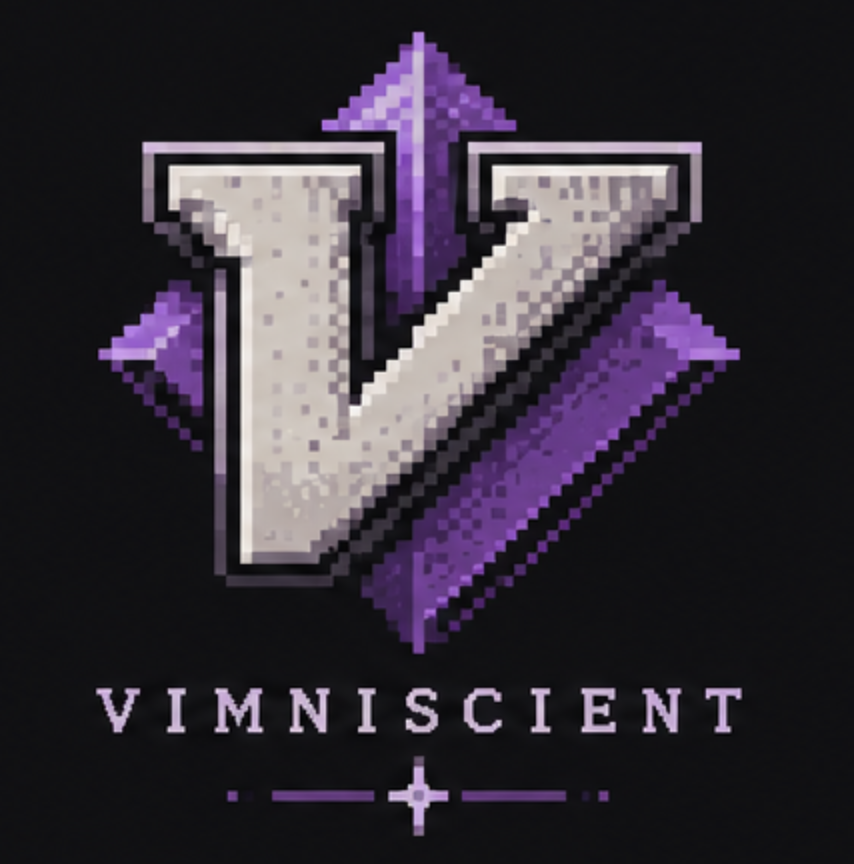

1 Learn
Every lesson starts with each task and the keys to type shown next to it. You use exactly what you'll have to remember, in your hands, before anything is asked of you.
type ciwwhole<Esc>

You've done vimtutor, you can get around, and you still reach for
jjjj and Backspace. Vimniscient gives you real editing tasks in the editor you
already use, shows you the shorter way, and brings each skill back until it sticks.
uv tool install vimniscient
then run vimniscient · or pipx install vimniscient, or on Arch and Omarchy yay -S vimniscient · Linux, Neovim 0.10+, Python 3.11+ · free and open source (AGPL)
The goal on top, your text below, the difference highlighted. When they match, the next task loads by itself.
Every lesson starts with each task and the keys to type shown next to it. You use exactly what you'll have to remember, in your hands, before anything is asked of you.
type ciwwhole<Esc>
Then the same skills come back on different text, in a different order, with the keys
hidden. Only this round counts. Every task has more than one text, so you remember the
skill, not the sentence. And the texts are mnemonic: they say what the keys stand for
(ciw is change inner word), or how memory works.
from memory Fix "spaec".
Keystrokes are counted the way VimGolf counts
them. Afterwards you see your keys next to the reference solution: if
ciwbuf<Esc>.. took you 14 keys and the reference does it in 10, you'll see how.
Spaced repetition, like Anki, brings each task back just before you'd forget it: sooner
when it went badly, later when it went well. Can't recall one? :Skip it,
see the answer, type it once, and get it again at the end.
Press t once a day. That's the whole habit.
gn selects the next search match. So cgn changes the next
match, and . then changes the one after that. Search once (with /
or *), cgn the first, then press . per match.
New keys cgn dgn *cgn n.
6-day streak · 9/37 lessons · hardtime blocking
keystroke efficiency, last 14 days
ci"). Due ones first, then up to ten new.Time left over? Press e. Tasks from every lesson, one after another, for as long as you like. Each one you solve climbs a level. New lessons join the mix as you climb, and the key budget shrinks, from about twice the reference to exactly the reference by level 200.
Go over the budget and it's a miss: you see the answer, type it with the keys shown, and a couple of tasks later the same skill comes back on another text, from memory.
budget for a task the reference solves in 11 keys
37 lessons and 194 tasks over six weeks, one lesson a day. Every reference solution is tested, typed at full speed into a real Neovim.
Text objects (ciw, da", dap), f/t, line commands, counts
The dot command, search as a motion, cgn, case and numbers, insert mode done well, visual mode
Macros, registers, marks, visual block, :s and :g
Ranges (:m, :t), :sort and shell filters, patterns, :norm, more motions, indenting
LazyVim's text objects (arguments, any quote or bracket, functions, sub-words) and comments, if you use LazyVim
Real edits on code, notes and data, each mixing several tools
It reads what you have installed and leaves out what you don't. It never changes your config.
hjkl brings the motion lessons backUse them! vimtutor teaches the basics, and this picks up after it. Vimniscient runs in your real editor, schedules what you need to repeat, and turns VimGolf into a daily habit.
Yes, that's the point. During a lesson it only turns off what would type for you (autopairs, completion, format-on-save) and plugins that replay or block your keys (which-key, hardtime). Everything else is your Neovim as you left it.
In ~/.local/share/vimniscient/, on your machine. Nothing is sent anywhere.
Lessons are YAML files: a goal, a start text with a ▮ for the cursor, a
target, a reference solution, and other texts for the same skill. The
README shows how,
and a checker types every solution into Neovim to prove it works.
Press p on the first run. It gives you two tasks from every lesson and skips the ones you already know. After that, t once a day.
uv tool install vimniscient